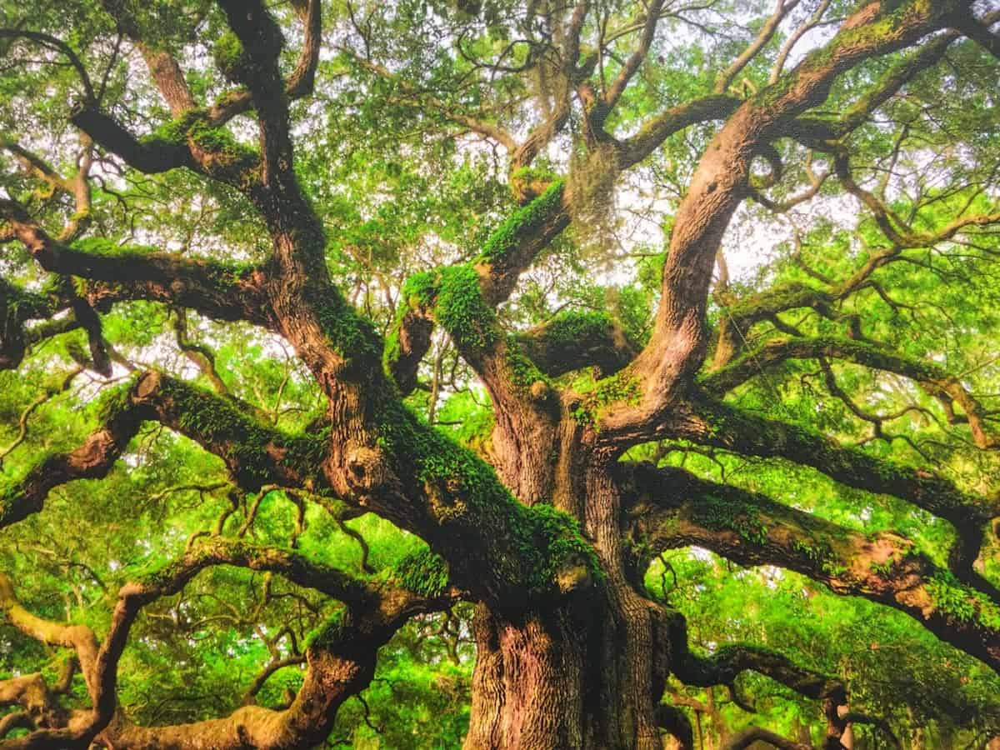
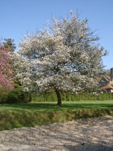
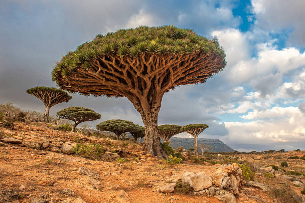

The Lungs of the Earth
One of the most vital roles trees play is that of Earth's lungs. Through the process of photosynthesis, trees absorb carbon dioxide from the atmosphere and release oxygen, thus making the air breathable for humans and countless other creatures. A single mature tree can provide a day's supply of oxygen for up to four people.

Ecosystem Engineers
Trees are not solitary beings; they are architects of entire ecosystems. They create habitats for a diverse array of plants and animals. Forests, for example, are teeming with life, from the towering canopy to the forest floor. Trees provide food, shelter, and nesting sites for birds, insects, mammals, and fungi. They also help regulate temperature and humidity, preventing soil erosion and maintaining a stable environment.
Carbon Storage and Climate Regulation
In a world grappling with climate change, trees are our allies. They act as carbon sinks, absorbing carbon dioxide and storing carbon in their wood and leaves. This not only helps mitigate climate change by reducing the amount of greenhouse gases in the atmosphere but also helps buffer the effects of rising temperatures through shade and transpiration.
Cultural Significance
Trees hold immense cultural significance across the globe. In various mythologies and religions, trees are seen as symbols of wisdom, strength, and the cycle of life. The Bodhi tree, under which Buddha is said to have gained enlightenment, and the Yggdrasil of Norse mythology are just a couple of examples.
Additionally, many societies celebrate and protect ancient and sacred trees, considering them not only as natural treasures but also as living links to their cultural heritage.
Economic and Practical Value
Beyond their ecological and cultural importance, trees have significant economic value. They provide us with timber for construction, paper for books and packaging, and various products like rubber, latex, and resin. Moreover, tree-based agriculture, such as fruit orchards and nut groves, sustains livelihoods and contributes to global food security.
Urban Greenery and Human Well-Being
In cities, trees play a crucial role in improving the quality of life. Urban green spaces with trees reduce air pollution, provide shade, and offer a respite from the concrete jungle. Research also shows that exposure to nature, including trees, has a positive impact on mental health, reducing stress and promoting well-being.
Conservation and Reforestation
As we face environmental challenges, such as deforestation and habitat loss, conservation efforts are crucial. Reforestation initiatives, which involve planting trees to restore ecosystems, combat climate change, and support local communities, are gaining momentum worldwide.
Conclusion
Trees, the ancient guardians of our planet, are vital to life as we know it. They provide oxygen, create habitats, and shape the environment. Beyond their ecological functions, they hold deep cultural significance and offer practical benefits. As we continue to grapple with environmental issues, it's imperative that we recognize the essential role trees play and work to protect and sustain these majestic giants for generations to come. In celebrating trees, we celebrate life itself.